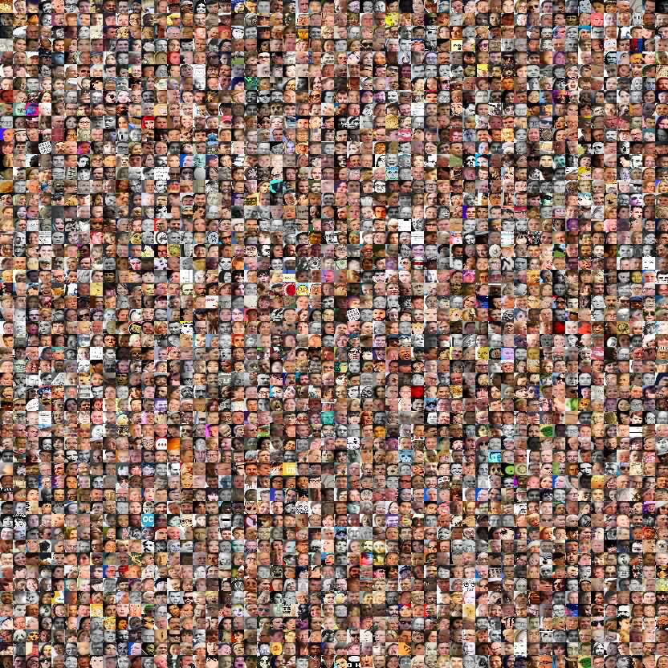
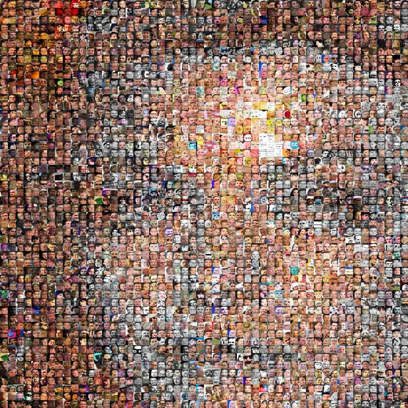

playing with faces
after collecting a lot of face images from my webbrowser-cache(see how many false positives the cascades retrieved !)

i decided, to make a small face mosaic of it.
it gets quite difficult with the rule, that you can only *swap* 2 images
and at the same time improve the score for both changed positions
